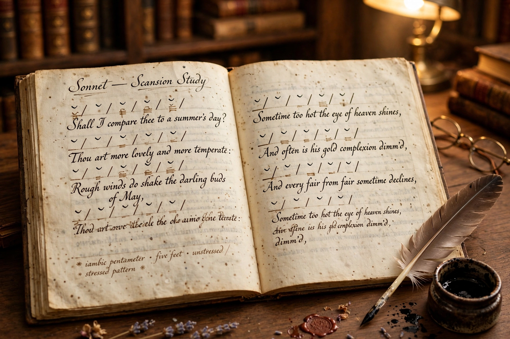

Metre (American spelling meter) is the basic rhythmic structure of a line within a work of poetry, as distinct from the free rhythms of prose. Many traditional verse forms prescribe a specific metre — a specific number of syllables, or a pattern of stressed and unstressed syllables — together with a rhyme scheme. The study and classification of metres and forms of verse is called prosody.

Different languages organise metre differently. Classical Greek and Latin poetry used quantitative metre, based on the patterning of long and short syllables; the epic metre was the dactylic hexameter. English, German, and Russian verse typically use accentual-syllabic metre, counting both stresses and syllables: the foot — iamb (unstressed–stressed), trochee, anapaest, dactyl, spondee — is the unit, and lines are named by their number of feet (monometer through hexameter and beyond). Old English and Old Norse verse used purely accentual metre, with a fixed number of stresses per line and structural alliteration. Syllabic verse, counting syllables only, is characteristic of French and Japanese poetry (as in the 5–7–5 haiku).
Iambic pentameter — five iambs per line — is the metre of Shakespeare's plays and sonnets, of Milton's Paradise Lost in blank verse, and of the heroic couplet. Ballad or common metre alternates iambic tetrameter and trimeter. Poets routinely vary the regular pattern with substitutions, caesuras, and enjambment to avoid monotony; free verse, dominant since the early 20th century, dispenses with regular metre altogether.